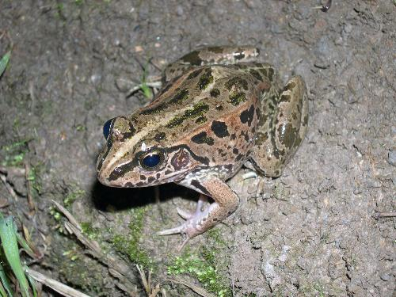
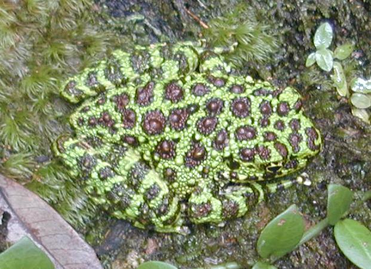
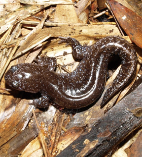

|  |
| 和名 | ナゴヤダルマガエル[1] |
|---|
| 学名 | Rana porosa brevipoda |
|---|
| 属 | 両生綱カエル目
アカガエル科トノサマガエル属 |
|---|
| 体長 | オス：49mm
メス：60mm |
|---|
| 生息地 | 日本：西日本、四国 |
|---|
| ランク | 絶滅危惧IB類(EN,環境省 2000年) |
|---|
| 要因 | 圃場整備などに伴う乾田化やうねの
減少、水路のコンクリート化によっ
て生息しやすい環境が減った。 |
|---|
|
|  |
| 和名 | オキナワイシカワガエル[2][3] |
|---|
| 学名 | Odorrana ishikawae |
|---|
| 属 | 両生綱無尾目
アカガエル科ニオイガエル属 |
|---|
| 体長 | オス：92mm - 108mm
メス：103mm - 115mm |
|---|
| 生息地 | 日本：沖縄本島北部 |
|---|
| ランク | 絶滅危惧IB類(EN,環境省 2014年)
絶滅危惧IB類(EN,IUCN 2001年) |
|---|
| 要因 | 森林伐採やダム・道路建設によって
生息地が破壊された。 |
|---|
|
|  |
| 和名 | アベサンショウウオ[4][5] |
|---|
| 学名 | Hynobius abei |
|---|
| 属 | 両生綱有尾目
サンショウウオ科サンショウウオ属 |
|---|
| 体長 | オス：107mm
メス：96mm |
|---|
| 生息地 | 日本：北陸、近畿北部 |
|---|
| ランク | 絶滅危惧IA類(CR,環境省 2014年)
絶滅危惧IA類(CR,IUCN 2001年) |
|---|
| 要因 | 農地開発や道路建設、スキー場・ゴ
ルフ場開発などによる生息地の破
壊、ゴミの不法投棄、人為的に移入
されたアメリカザリガニや幼生のア
ライグマによる成体の捕食などによ
り生息数が激減している。 |
|---|
|